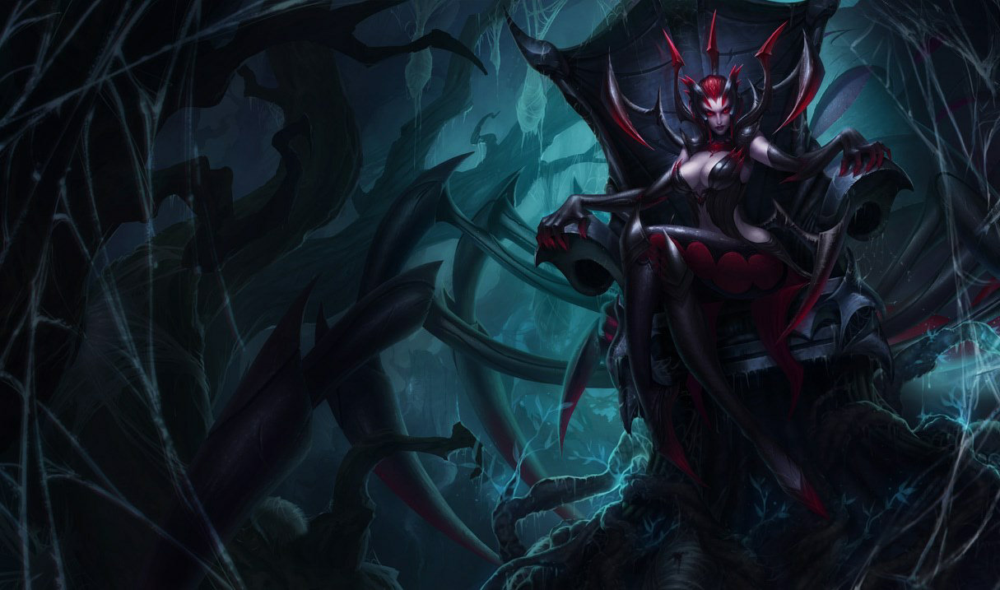

La dama Elise nació hace siglos en el seno de la casa Kythera, una de las familias más antiguas y poderosas de Noxus, donde descubrió muy pronto lo útil que resulta la belleza para influir sobre las mentes débiles. Al alcanzar la mayoría de edad, disfrutó de los cortejos de Berholdt, heredero de la casa Zaavan. Fueron muchos los que se opusieron a su unión, pues Kythera se fortalecería a expensas de Zaavan; pero Elise engañó a su futuro marido y manipuló a sus detractores para asegurarse la celebración del enlace. Aunque ella lo ignoraba, el matrimonio político había estado fraguándose durante años. Unas fuerzas oscuras que operaban desde las sombras movían los hilos del imperio, y Berholdt no era más que un peón en una partida mucho más elaborada. Pese a todo, nadie esperaba que Elise terminase por someterlo completamente. Aunque su marido era la cara visible de su casa, resultaba evidente quién ostentaba el poder en realidad. Con el paso del tiempo, el resentimiento de este fue cada vez a más. Una noche, durante la cena, en medio de su habitual atmósfera de frialdad, le reveló a su esposa que había envenenado el vino y le exigió que se apartase de la esfera social para permitirle recuperar las riendas del poder. Sabiendo que él llevaría el antídoto encima, Elise empezó a interpretar el papel de la esposa arrepentida: lloró y suplicó a su marido que la perdonara. Cuando pareció haberlo convencido, cogió rápidamente un cuchillo de la mesa y le atravesó el corazón con él. Pese a que el antídoto surtió efecto, Elise estuvo postrada durante semanas. Entonces..., apareció la mujer pálida. La enigmática señora de "la Rosa Negra" le habló de una sociedad secreta donde aquellos que eran dignos estudiaban magia negra, y compartían secretos y saberes ocultos. A la mujer pálida poco le importaba quién estuviese al mando de las casas de nobles, siempre y cuando le jurase lealtad. Dado que Elise había asesinado a Berholdt, su fiel siervo, debía demostrar su valía o encontraría a otro candidato mejor cualificado. Al ver cómo se abría ante sus ojos un camino hacia un poder superior, Elise se integró en la sociedad, como pocos habían logrado antes. A menudo, se reunía con las figuras notorias, traficando con influencias y atrapando a sus rivales en una compleja red de planes retorcidos. Con el respaldo económico de dos casas, no eran muchos los que podían resistirse a sus encantos. Poco a poco, fue volviéndose más hábil en el arte de la persuasión, y disfrutaba imponiendo su voluntad. Tiempo después, oyó hablar de un preciado objeto, muy importante para los miembros de la Rosa Negra: el cráneo de un antiguo señor de la guerra, conocido como Sahn-Uzal. Según decían, la calavera se ocultó hacía años en las infames Islas de la Sombra. Decidida a ganarse el favor de la mujer pálida, Elise encontró a un capitán desesperado y asfixiado por las deudas, dispuesto a llevar a un puñado de devotos a la ciudad maldita de Helia. Desembarcaron en una playa de arena ceniza y, mientras buscaban en vano la cámara perdida, sufrieron el tormento de los malévolos espectros de la isla. Sin embargo, Elise encontró algo que no esperaba. Un ser procedente de un pasado remoto se había asentado en las umbrías profundidades de debajo de la ciudad. La abotargada y monstruosa criatura quitinosa se llamaba Vilemaw, el dios araña. Y emergió de la oscuridad para devorar a los intrusos justo antes de clavarle los colmillos a Elise en el hombro. Ella se desplomó aullando de dolor y convulsionando a medida que el veneno desencadenaba terribles transformaciones en su cuerpo. La columna se le estremeció con un movimiento ondulante al tiempo que unas patas de araña le brotaban de la carne. Elise se levantó, jadeante por la agonía de la transformación, y se encontró con que el dios araña se erguía ante ella. En ese momento, se produjo un entendimiento tácito entre ellos. Elise alcanzó la playa sin que la molestaran los espíritus de la isla y dejó atrás la retorcida foresta igual que había entrado. Unas semanas después, cuando su navío regresó a la capital noxiana en mitad de la noche, Elise había recuperado su aspecto humano..., aunque era la única criatura viva que quedaba a bordo. A pesar de no haber traído el cráneo del señor de la guerra, la mujer pálida supo valorar el insólito y peligroso don de Elise: la capacidad de desplazarse entre Noxus y las Islas de la Sombra a su antojo. Las dos sellaron un pacto: la Rosa Negra proporcionaría a Elise acólitos para ofrecérselos al dios araña y ella, a cambio, les entregaría cualquier reliquia de poder que encontrase en aquellas costas lóbregas y amenazantes. Elise volvió a instalarse en las baldías estancias de la casa Zaavan, donde fue cultivando con esmero su reputación como criatura hermosa, pero totalmente inalcanzable. Nadie sospechaba su auténtica naturaleza, aunque corrían curiosos rumores sobre su persona, delirantes relatos sobre su inmortal belleza o la aterradora criatura cuya madriguera, según decían, se encontraba en lo alto de su ruinoso y polvoriento palacio. Aunque han pasado siglos, siempre que Elise oye la llamada de su dios, regresa a las tierras de la Niebla Negra con un desafortunado candidato o cualquier incauto que se deje arrastrar. Ninguno de sus acompañantes regresa nunca.

ELISE
LA REINA DE LAS ARAÑAS